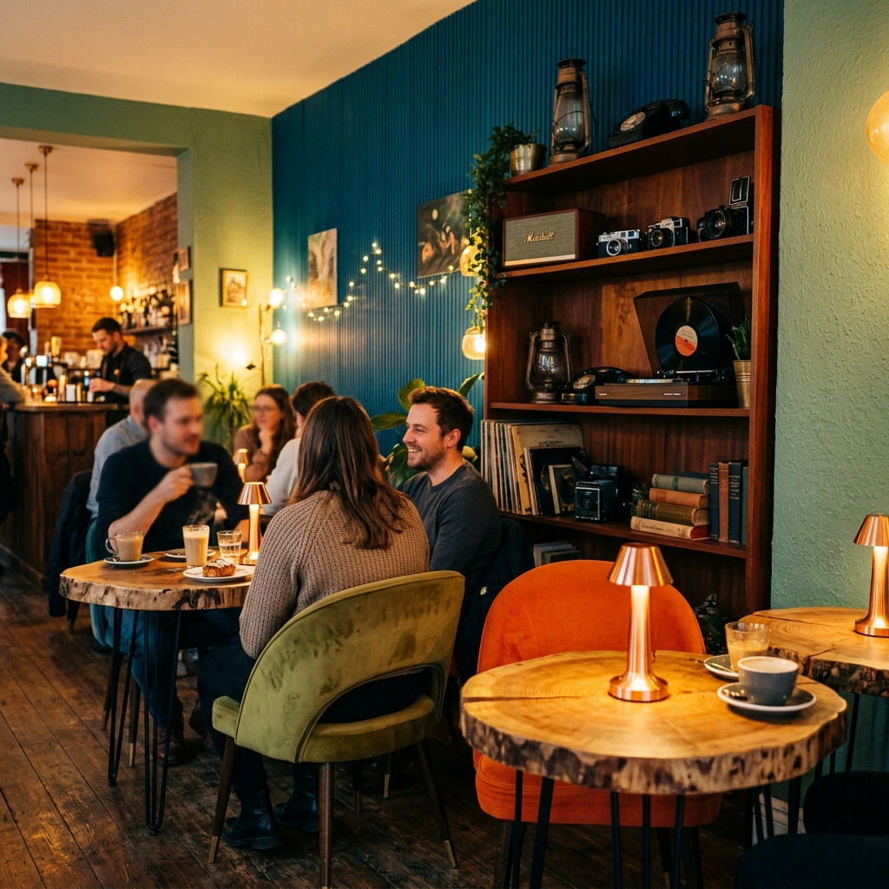
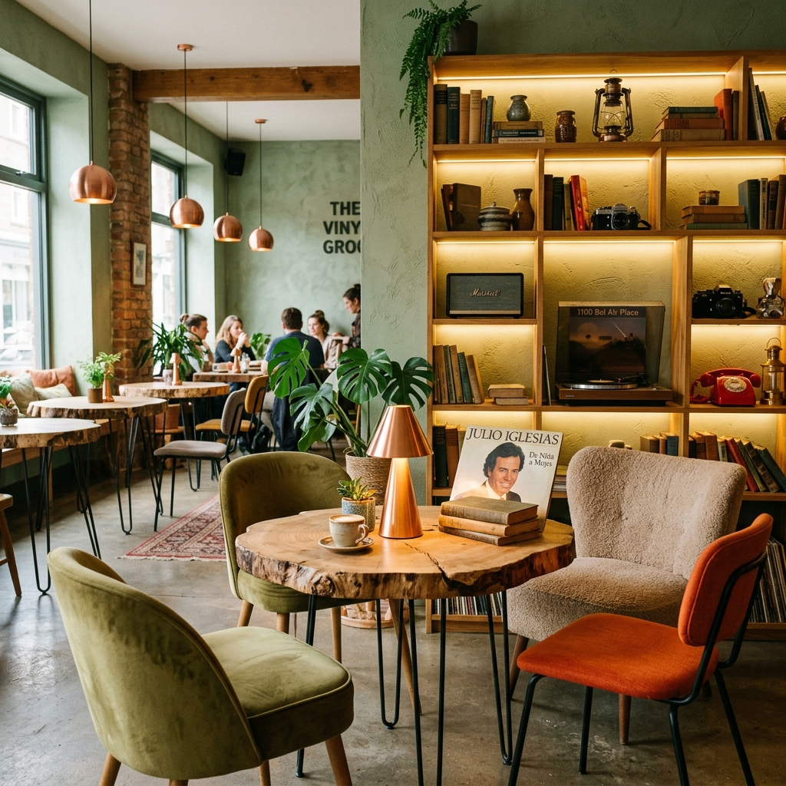

Un voyage entre vintage et modernité — où chaque tasse raconte une histoire.

Donatello mêle magistralement une esthétique nostalgique et rétro à une atmosphère fraîche et moderne — une oasis accueillante riche en texture et en couleur.
Tables en bois brut massif, fauteuils velours, étagère de curiosités vintage — platine vinyle, téléphone à cadran, appareils photo anciens — chaque détail vous transporte dans le temps.